{
"config": [
{
"type": "execute",
"parameters": {
"command": "mkdir -p /home/user/.thunderbird",
"shell": true
}
},
{
"type": "open",
"parameters": {
"path": "/home/user/.thunderbird"
}
}
],
"evaluator": {
"func": "check_include_exclude",
"result": {
"type": "vm_command_line",
"command": [
"python3",
"-c",
"import sys, traceback\ndef _main():\n import glob, os, sys, re\n cands = glob.glob('/home/user/.thunderbird/*/Mail/Local Folders/Drafts') + glob.glob('/home/user/.thunderbird/*/Mail/*/Drafts') + glob.glob('/home/user/.thunderbird/*/ImapMail/*/Drafts')\n bad = 'no draft found matching the requested message'\n for p in cands:\n if not os.path.isfile(p):\n continue\n txt = open(p, errors='ignore').read()\n for blob in txt.split('\\nFrom - '):\n low = blob.lower()\n if 'hollis.abara@riverkeep.example' in low and 'volunteer day thanks' in low and re.search(r'thank you for the 40 bags collected saturday', low.replace('=\\n', '')):\n bad = None\n break\n if bad is None:\n break\n if bad:\n print(bad, file=sys.stderr)\n print('FAIL' if bad else 'PASS')\n\ntry:\n _main()\nexcept Exception:\n traceback.print_exc(file=sys.stderr)\n print(\"FAIL\")\n"
]
},
"expected": {
"type": "rule",
"rules": {
"include": [
"PASS"
],
"exclude": [
"FAIL"
]
}
}
}
}
step 1 06:34:41
THINKINGThe task is to create an unsent email draft in Thunderbird to hollis.abara@riverkeep.example with a specific subject and body. I see a Thunderbird folder in the file manager, confirming Thunderbird is installed. I need to open Thunderbird first. I don't see it in the taskbar directly, so I'll check the applications. Let me start by taking a screenshot to see current state, but I already have one. I should open Thunderbird - it may be accessible via the Activities/apps grid. Let me open the apps grid first.
ACTIONI'll open the applications grid to find Thunderbird.
THINKINGThunderbird opened with an Account Setup screen. There's no existing account configured. To create a draft, I don't necessarily need a full account, but Thunderbird may require an account to compose. Actually, in Thunderbird you can't easily compose without an account.
However, the task just says "leave an unsent draft". I should cancel this account setup and see if I can compose. Actually, without an account, Thunderbird typically won't let you compose mail normally. But there might already be a local account or I can use the menu.
Let me cancel this setup and explore the main window. Actually, let me reconsider - the best approach is to set up a local account or use an existing one. But I don't have credentials for an account.
Let me think. Thunderbird can create a draft even without a configured account in some cases. Let me cancel this dialog first and check the main Thunderbird window to see what's available.
ACTIONThunderbird opened to account setup. I'll cancel this to see the main window, since I just need to compose a draft.
EXECUTED (pyautogui in VM)pyautogui.click(390, 589)
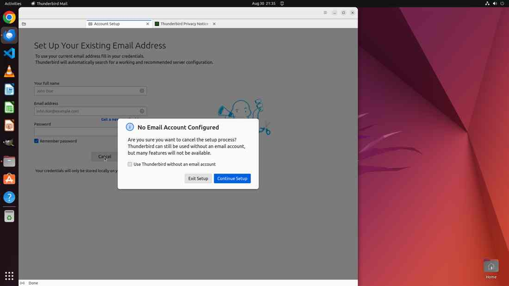
step 7 06:35:30
THINKINGA dialog appeared: "No Email Account Configured" with an option "Use Thunderbird without an email account". However, even without an account, composing mail is limited.
The best path to create a draft is to have at least a local account. I can set up a local account. But the setup requires an email address with valid server config. However, I could set up a "Local Folders" account which doesn't need a server. Actually, the simplest is to check "Use Thunderbird without an email account" then Exit Setup. But without an account, the "Write" button might not be available.
Alternatively, I can create a local account. Let me first check the "Use Thunderbird without an email account" checkbox and exit setup to see the main window. From there I can add a Local Folders account and try composing.
Actually, the most reliable way to create a draft is to have a local email account. I'll proceed: check the checkbox, then Exit Setup.
ACTIONI'll check "Use Thunderbird without an email account" and exit setup to reach the main window.
EXECUTED (pyautogui in VM)pyautogui.click(743, 671)
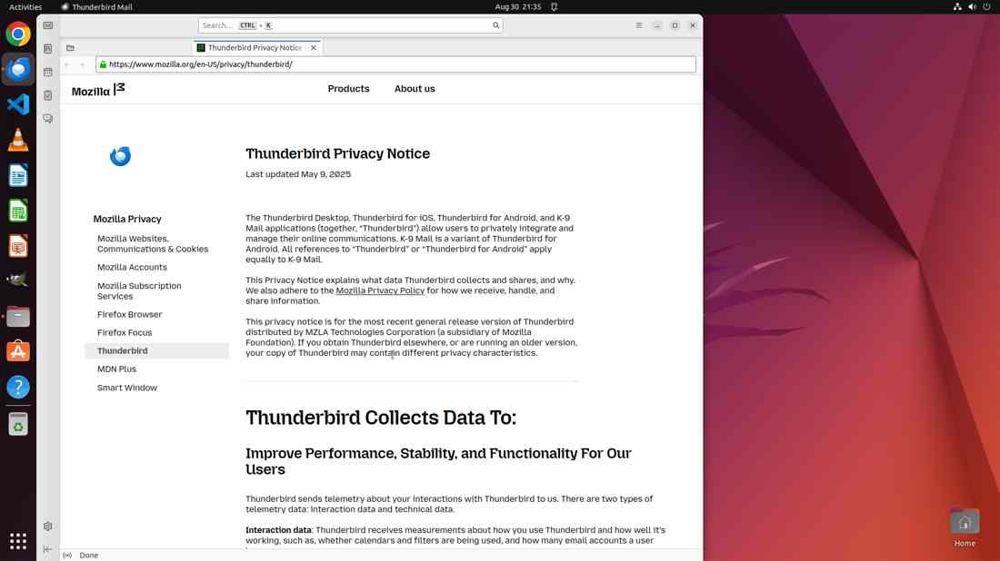
step 9 06:35:48
THINKINGNow I'm in the main Thunderbird window. It opened a Privacy Notice tab. I need to compose a new message. The "Write" button is in the top-left area. I see a pen/write icon in the top-left (63,32 area). Let me look - top left has a compose icon at around (63, 32). Let me click it to write a new message.
Actually without an account, I need a Local Folders account for drafts to be saved. But let me first try clicking Write to see what happens.
ACTIONI'm in the main window now. I'll click the "Write" button to compose a new message.
EXECUTED (pyautogui in VM)pyautogui.click(244, 130)
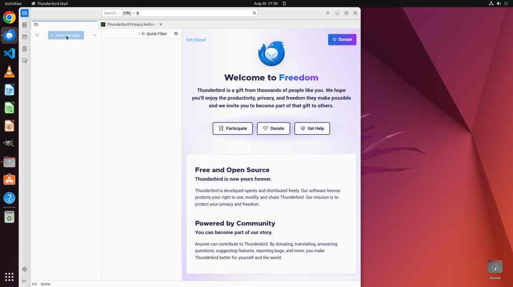
step 11 06:36:15
THINKINGThe compose window didn't open, likely because there's no email account configured, so Thunderbird doesn't know which identity to use as the "From" address. I need to set up a local account first.
The simplest reliable approach: create a Local Folders account. But actually, even Local Folders alone doesn't provide a "From" identity for composing. I need an actual email account identity.
Let me reconsider. To compose and save a draft, Thunderbird needs at least one account with an identity (email address). I should set up an account. I can use "Email address" - but that requires valid server config which I don't have.
Alternative: There's an option to create a local account. In Thunderbird, you can add an account via Account Settings. But the compose "From" needs an identity.
Actually, the cleanest approach is to go back to the account setup, enter a name and an email address, choose "Configure manually" and set up a local/IMAP account without validating. But validation would fail.
Let me think differently. Perhaps I should click the menu (hamburger) and look at options. Actually, let me first try to set up a local account. In the account setup, there's sometimes an option "I'll configure it manually".
A simpler robust method: Create an email account with a local identity. Thunderbird's account setup has a "Configure manually" option where I can set incoming/outgoing server to localhost. But that's complex and won't validate.
Actually, the most reliable for creating a draft that persists: just create any account. Thunderbird lets you finish account setup even if it can't verify, as long as you configure manually. But it might block.
Let me reconsider whether "New Message" truly failed. The screen looks the same. Maybe the compose window opened behind or is a separate window not visible. Let me take a screenshot to confirm — actually the screenshot already shows no compose window.
Let me try the hamburger menu to find "New Message" / compose, or check if there's an identity issue. Let me open the menu (top right hamburger at 817,32).
ACTIONThe compose window didn't open, likely because no account/identity exists. Let me open the main menu to check options.
EXECUTED (pyautogui in VM)pyautogui.click(1224, 46)
step 12 06:36:25
THINKINGThe menu is open. There's "Create" with a submenu, and "New Account". Let me hover over "Create" to see options - it might have "Message" to compose. Let me click "Create".
ACTIONI'll hover over "Create" to see compose options.
EXECUTED (pyautogui in VM)pyautogui.click(982, 118)
step 14 06:36:55
THINKINGThe compose window still didn't open. This confirms that Thunderbird needs at least one account with a valid identity (From address) to compose. Without it, "New Message" silently fails.
I need to create an account. Since I don't have real server credentials, I should set up a local account. The best approach is to go to Account Settings and add a "Local Folders" plus an identity. But Local Folders alone doesn't create a From identity for composing.
Actually, Thunderbird requires an email account (with a From identity) to send. But for a *draft*, Thunderbird still requires a sender identity.
The cleanest solution: Set up an email account via the setup wizard, but configure it manually so it doesn't need to validate against a real server. In the setup, after entering name and email, there's "Configure manually". I can set incoming server type IMAP with a dummy host, and outgoing server SMTP with a dummy host, then click "Done". Thunderbird may complain it can't verify but let me try - actually it usually blocks on verification.
Alternatively, there's a simpler trick: Thunderbird's account setup, when you click "Configure manually", lets you fill in and click "Done" and it will attempt to auto-configure. If it fails, it shows the config page where you can just accept.
Actually, let me reconsider. The most reliable, minimal path to get a compose-able identity is to set up a local account. Let me go to "Account Settings" and see what's there. There may already be a "Local Folders" account. Let me open Account Settings from the menu.
ACTIONComposing still fails because there's no account identity. I'll open Account Settings to create an account.
EXECUTED (pyautogui in VM)pyautogui.click(1012, 311)
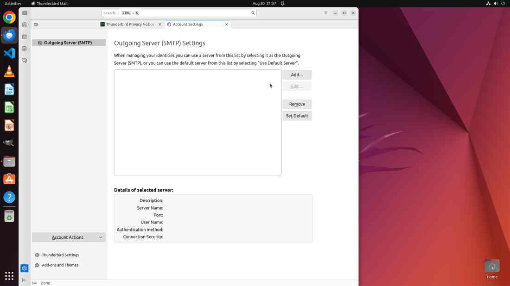
step 16 06:37:19
THINKINGAccount Settings shows only "Outgoing Server (SMTP)" - no email accounts exist. I need to add an account. Let me use "Account Actions" dropdown at the bottom, which usually has "Add Mail Account". Or I can go back to the setup wizard.
Actually, the cleanest approach to create a sender identity for composing is to add a mail account. Let me click "Account Actions" dropdown.
ACTIONI'll click "Account Actions" to find the option to add a mail account.
EXECUTED (pyautogui in VM)pyautogui.click(219, 728)
step 18 06:37:49
THINKINGThe account setup wizard opened. I need to fill in a name and email. I don't have real credentials, but I just need a local identity so I can compose a draft. I'll enter a name and a local email address. To avoid needing real server validation, I'll use "Configure manually" after entering the details.
Let me fill in:
- Full name: Volunteer (or any name). I'll use "Volunteer".
- Email address: I need a sender email. Since the recipient is at riverkeep.example, I could use a plausible local sender. Let me use something generic like volunteer@riverkeep.example. Actually the task doesn't specify a From. Any valid identity works. I'll use a placeholder.
Let me fill the name and email. Then there should be a "Configure manually" link to avoid auto-detect failing. Let me type into the fields first.
ACTIONI'll fill in the name and a local email address for the sender identity.
EXECUTED (pyautogui in VM)pyautogui.typewrite("Volunteer")
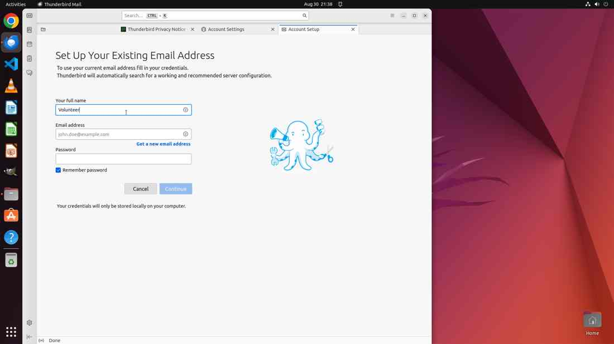
step 20 06:38:13
THINKINGNow the email address. I'll use volunteer@riverkeep.example to match the org domain, a plausible local identity. Then password (required for the account to be accepted, though it won't connect). I'll fill a placeholder password. Then look for "Configure manually" link which usually appears after entering the email. Let me fill email and password.
EXECUTED (pyautogui in VM)pyautogui.click(240, 589)
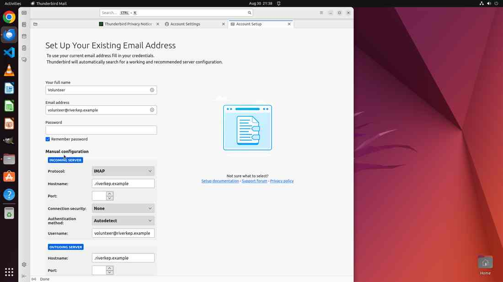
step 23 06:38:49
THINKINGThe manual configuration appeared with fields. It auto-filled hostnames with ".riverkeep.example". I need to provide hostnames. Since I can't actually connect, I'll just fill in placeholder hostnames to make the "Done" button active. Let me set the incoming hostname to something like "mail.riverkeep.example" and the outgoing similarly. Then scroll down to find a "Done"/"Retest" button.
Let me fill the incoming hostname. I'll triple-click the field and type a value. Let me use "localhost" to keep it simple. Actually any text works to enable the button. Let me fill both hostnames and a password.
First, let me fill the incoming hostname.
ACTIONI'll fill in the server hostnames. Let me set the incoming hostname first.
EXECUTED (pyautogui in VM)pyautogui.tripleClick(468, 701)
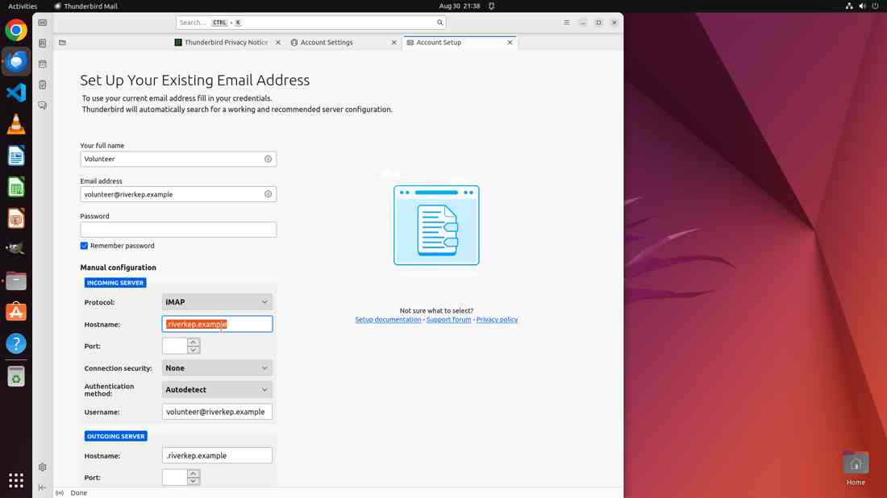
step 24 06:39:02
THINKINGThe incoming hostname is selected. I'll type a value. Then fill outgoing hostname similarly. Then scroll down to find the "Done" button. Let me type the incoming hostname, then click outgoing hostname field and type. I'll also fill a password to be safe.
EXECUTED (pyautogui in VM)pyautogui.tripleClick(468, 987)
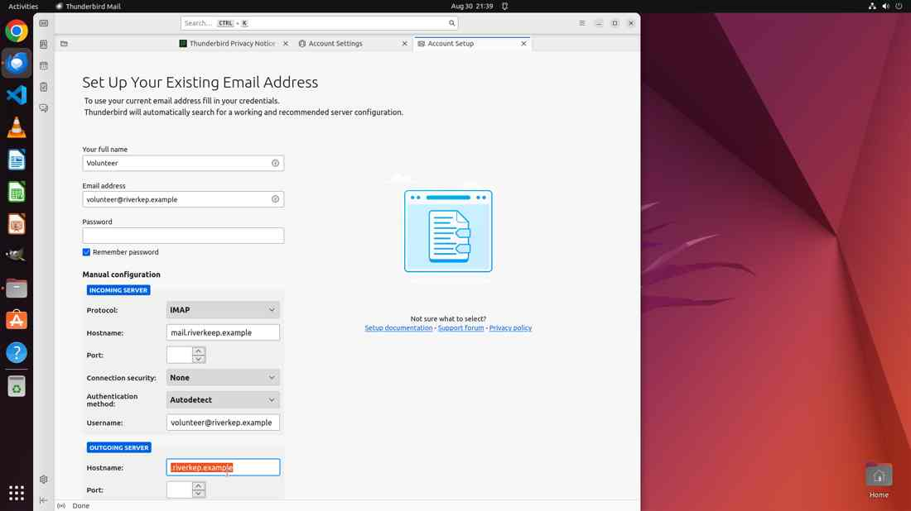
step 26 06:39:22
THINKINGOutgoing hostname selected. Type value, then fill password. Then scroll down for Done button. Let me type outgoing hostname, then click password and type.
EXECUTED (pyautogui in VM)pyautogui.typewrite("mail.riverkeep.example")
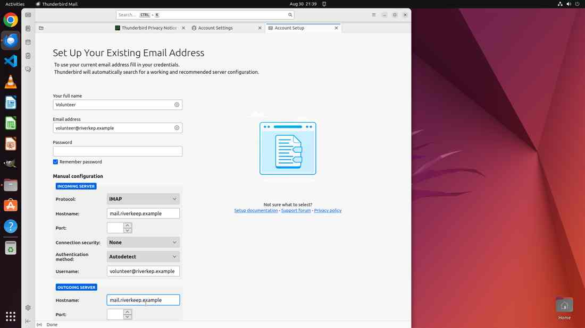
step 27 06:39:32
THINKINGBoth hostnames set. Now fill password (needed to enable Done), then scroll down to find the "Done" button. Let me click the password field and type a placeholder.
ACTIONI'll fill the password, then scroll down to find the finish button.
EXECUTED (pyautogui in VM)pyautogui.typewrite("password")
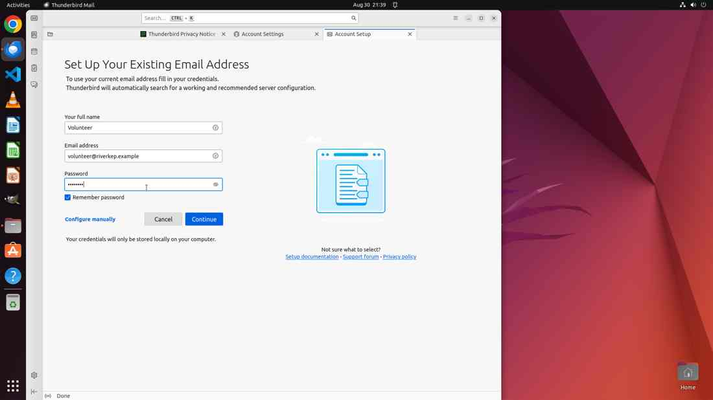
step 29 06:39:55
THINKINGThe manual configuration section collapsed after I typed (it went back to the simple view with Continue button). The "Continue" button is now active. Let me click "Continue" to proceed. It will try to verify the config, which will likely fail, but it should show a retest/advanced page. Let me click Continue.
ACTIONThe form is complete. I'll click "Continue" to proceed.
EXECUTED (pyautogui in VM)pyautogui.click(547, 589)
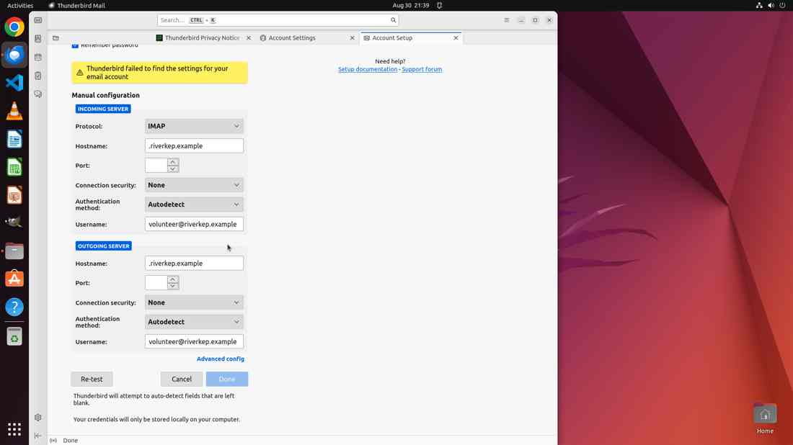
step 30 06:40:08
THINKINGIt reset the hostnames to ".riverkeep.example" and shows "Thunderbird failed to find the settings". The "Done" button is greyed out. The hostnames got reset because my earlier entry was overridden. I need to re-enter the hostnames. This time after entering them the "Done" button should enable (it usually enables when fields are filled). Let me re-enter both hostnames.
Let me triple-click incoming hostname and type, then outgoing.
ACTIONThe hostnames were reset. I'll re-enter them so the "Done" button enables.
EXECUTED (pyautogui in VM)pyautogui.tripleClick(468, 617)
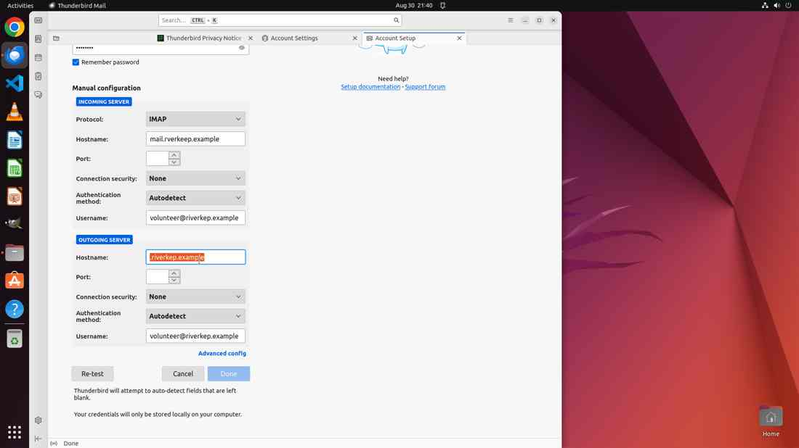
step 33 06:40:56
THINKINGThe outgoing hostname shows ".riverkeep.example" selected but it's a leading dot, meaning the field was empty and auto-completed. Let me type the value. Then the "Done" button should become enabled. Let me type and then check.
EXECUTED (pyautogui in VM)pyautogui.typewrite("mail.riverkeep.example")
step 34 06:41:10
THINKINGBoth hostnames are filled. The "Done" button is still greyed out. The "Done" button might require a successful test, or it enables once all fields have been validated. Let me try clicking "Re-test" to see if it enables Done, or maybe I should click "Advanced config" which often offers to create the account even if not verified.
Actually in Thunderbird, the "Done" button on this failed page usually remains enabled once you've filled the hostnames. But it's still grey. Let me click elsewhere to commit, then check. Let me click on the "Advanced config" link which typically gives "Create account" even when config fails.
ACTIONBoth hostnames are filled. I'll click "Advanced config" to create the account despite verification.
EXECUTED (pyautogui in VM)pyautogui.click(532, 848)
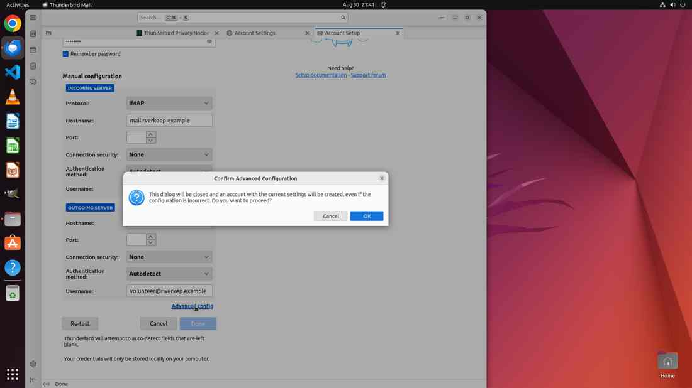
step 35 06:41:22
THINKINGThis is exactly what I want: "an account with the current settings will be created, even if the configuration is incorrect." I'll click OK to create the account.
ACTIONThis will create the account regardless of configuration. I'll click OK.
EXECUTED (pyautogui in VM)pyautogui.click(1016, 600)
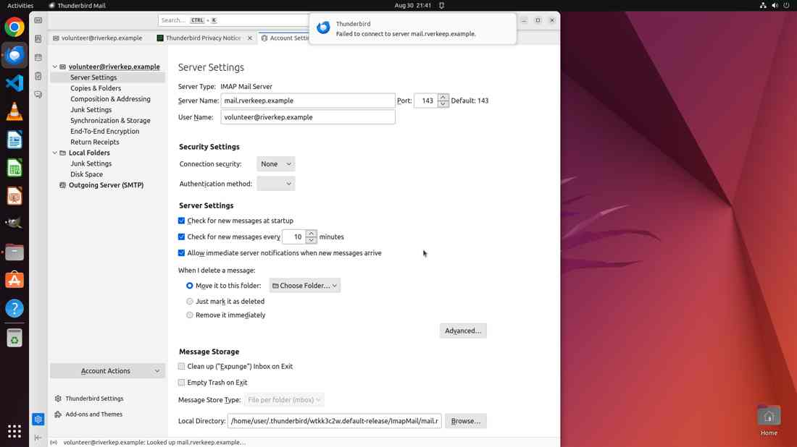
step 36 06:41:35
THINKINGThe account "volunteer@riverkeep.example" was created (visible in the left panel). There's a "Failed to connect to server" notification, which is expected since it's a dummy server - that's fine, we only need the identity to compose a draft.
Now I can compose. Let me close this Account Settings tab and open a new message. I'll click the close X on the "Account Settings" tab, or just go to the main mail area. Let me click the main mail tab. Actually I'll just open a compose window using Ctrl+N. First let me close this settings tab by clicking the X at (570,60).
ACTIONThe account was created (connection failure is expected and irrelevant for a draft). I'll close this settings tab and compose the message.
EXECUTED (pyautogui in VM)pyautogui.click(853, 88)
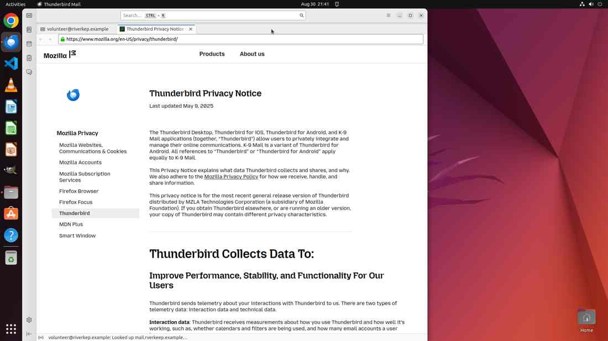
step 37 06:41:46
THINKINGNow I'm at the main window with the account. I'll compose a new message with Ctrl+N. This should open the compose window now that an identity exists.
ACTIONNow I'll open a new compose window with Ctrl+N.
EXECUTED (pyautogui in VM)pyautogui.hotkey("ctrl", "n")
step 38 06:41:56
THINKINGThe compose window is open with From set to Volunteer <volunteer@riverkeep.example>. The To field is focused. I'll type the recipient, then Tab to Subject, type subject, Tab to body, type body. I can batch these.
ACTIONThe compose window is open. I'll fill in the To, Subject, and body fields.
EXECUTED (pyautogui in VM)pyautogui.click(613, 234)
step 39 06:42:07
THINKINGThe To field is focused. I'll type the recipient, then Tab to Subject, type subject, then click into the body and type body. Let me batch: type To, Tab, type subject, then click body area and type body.
Actually Tab from To goes to Subject. Then I need to move to body - I'll click the body area. Let me do To + Tab + Subject first, then handle body separately to be safe. Actually I can batch all: type to, tab, type subject, then click body, type body.
ACTIONI'll type the recipient, subject, and body in sequence.
EXECUTED (pyautogui in VM)pyautogui.typewrite("hollis.abara@riverkeep.example")
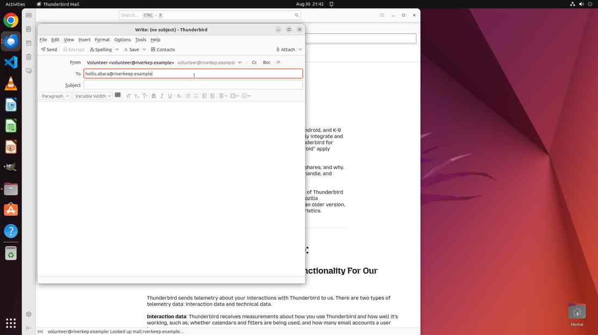
step 40.1 06:42:19
THINKINGRecipient entered. Now click Subject, type subject, then click body and type body. I'll batch these.
ACTIONNow the subject and body.
TOOL CALL<tool_call>
<function=computer_use>
<parameter=action>
left_click
</parameter>
<parameter=coordinate>
[319, 253]
</parameter>
</function>
</tool_call>
<tool_call>
<function=computer_use>
<parameter=action>
type
</parameter>
<parameter=text>
Volunteer Day Thanks
</parameter>
</function>
</tool_call>
<tool_call>
<function=computer_use>
<parameter=action>
left_click
</parameter>
<parameter=coordinate>
[312, 416]
</parameter>
</function>
</tool_call>
<tool_call>
<function=computer_use>
<parameter=action>
type
</parameter>
<parameter=text>
Thank you for the 40 bags collected Saturday.
</parameter>
</function>
</tool_call>
EXECUTED (pyautogui in VM)pyautogui.click(613, 273)
step 40.2 06:42:22
same model call as the previous action
EXECUTED (pyautogui in VM)pyautogui.typewrite("Volunteer Day Thanks")
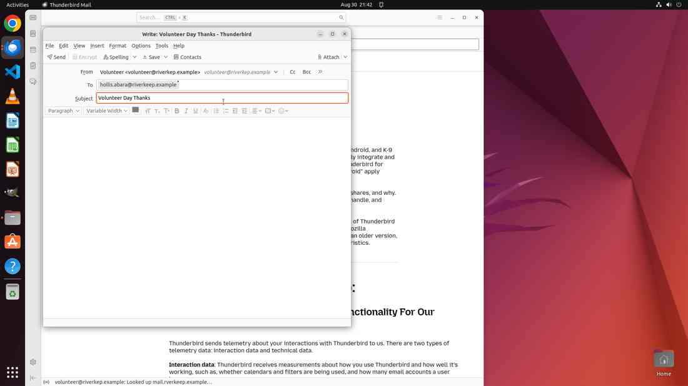
step 40.3 06:42:26
same model call as the previous action
EXECUTED (pyautogui in VM)pyautogui.click(599, 449)
step 40.4 06:42:29
same model call as the previous action
EXECUTED (pyautogui in VM)pyautogui.typewrite("Thank you for the 40 bags collected Saturday.")
step 41 06:42:41
THINKINGAll fields are correctly filled:
- To: hollis.abara@riverkeep.example (chips/pill formatted)
- Subject: Volunteer Day Thanks
- Body: Thank you for the 40 bags collected Saturday.
Now I need to save this as an unsent draft. I'll click the "Save" button (in the toolbar). That saves it to the Drafts folder and leaves it unsent. I should click "Save" not "Send". The Save button has a dropdown. Let me click Save.
ACTIONAll fields are filled correctly. Now I'll save it as a draft (unsent) using the Save button.
EXECUTED (pyautogui in VM)pyautogui.click(420, 156)
step 42 06:42:54
THINKINGIt's saving the message to the Drafts folder ("Copying message to Drafts folder..."). This is exactly what we want - an unsent draft. Let me wait for it to finish.
ACTIONIt's copying the message to the Drafts folder. I'll wait for it to complete.
THINKINGThe progress bar is full but the dialog is still showing "Copying message to Drafts folder...". This may be taking a while because it's trying to save to the IMAP account's Drafts folder which can't be reached (the server is a dummy). It might be stuck trying to connect to the remote server to create a Drafts folder.
This is a concern: the account is IMAP with an unreachable server, so saving to the account's Drafts folder may hang/fail.
To ensure a reliable local unsent draft, I should change the draft folder to a Local Folders Drafts, or the account's "Copies & Folders" setting. But first, let me wait a little longer - it might just be slow.
Actually, if it's stuck, I should cancel and instead configure the account to store drafts in Local Folders. Let me wait a bit more first to see if it completes.
ACTIONThe save is taking long, possibly because the IMAP server is unreachable. Let me wait a bit longer to see if it completes.
THINKINGIt's stuck at "Copying message to Drafts folder..." because it's trying to save to the IMAP account's Drafts folder which is on an unreachable server. I should cancel this and reconfigure the account to keep drafts in Local Folders (which is local and reliable), then save again.
Let me click Cancel.
ACTIONIt's stuck because it's trying to save to the unreachable IMAP server's Drafts folder. I'll cancel and switch the draft location to local storage.
EXECUTED (pyautogui in VM)pyautogui.click(718, 523)
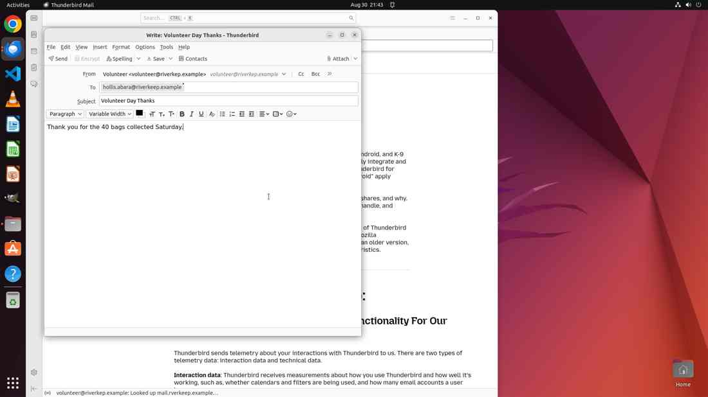
step 46 06:44:03
THINKINGThe dialog was cancelled. The compose window still has all the content. Now I need to change the account's Copies & Folders setting so drafts are kept in Local Folders (which is local, no server needed).
The best approach: change the account type or its Copies & Folders. Actually, a simpler approach: change the account to "Local Folders" based by changing the Copies & Folders to "Keep message drafts in: Other: Local Folders/Drafts".
But even simpler and more robust: I could just change the incoming server type from IMAP to... there's no POP option that avoids server for drafts. Actually, I want to set the draft folder to a local one.
Let me go to Account Settings → account → Copies & Folders, and set "Keep message drafts in" to "Other" → Local Folders Drafts. Let me open Account Settings via the menu.
Actually, there's an even cleaner solution. The issue is the IMAP account tries to reach the server. If I change "Copies & Folders" to store drafts in Local Folders, saving a draft becomes local and instant.
Let me open the main menu and go to Account Settings. But the compose window is in front. I can open account settings from the compose window's menu? No, better from the main window. Let me click the main window's hamburger menu (817,32) - but it's behind. Let me click on the main window first (the visible part on the right) then the hamburger. Actually the hamburger at top right of main window is at ~817,32 but the compose window overlaps the left. The main window titlebar area to the right of compose is visible. Let me click the hamburger which is at 817,32 - that's on the main window (compose window ends at ~657). Yes 817 is on main window.
ACTIONThe draft content is preserved. Now I'll reconfigure the account to store drafts locally. I'll open Account Settings from the main window menu.
EXECUTED (pyautogui in VM)pyautogui.click(1012, 311)
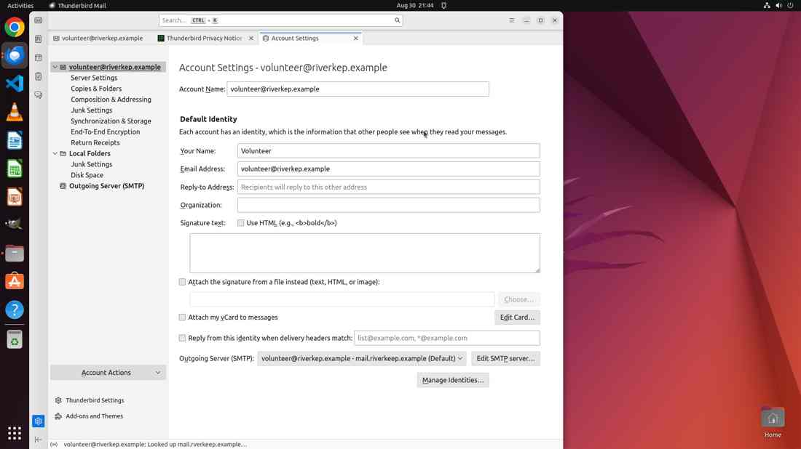
step 48 06:44:26
THINKINGAccount Settings is open. I see the account with sub-items: Server Settings, Copies & Folders, etc. I'll click "Copies & Folders" to change where drafts are stored.
ACTIONI'll click "Copies & Folders" to change the draft storage location.
EXECUTED (pyautogui in VM)pyautogui.click(228, 210)
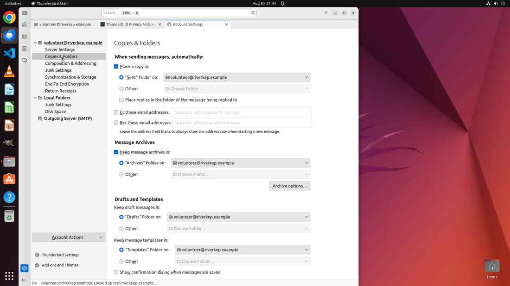
step 49 06:44:37
THINKINGI see "Drafts and Templates" → "Keep draft messages in:" currently set to "Drafts" Folder on: volunteer@riverkeep.example (the IMAP account). I'll change this to "Other" and choose a Local Folders draft folder.
I'll click the "Other:" radio button for drafts, then click "Choose Folder..." and select Local Folders Drafts.
ACTIONI'll switch the draft location to "Other" so I can pick a local folder.
EXECUTED (pyautogui in VM)pyautogui.click(455, 860)
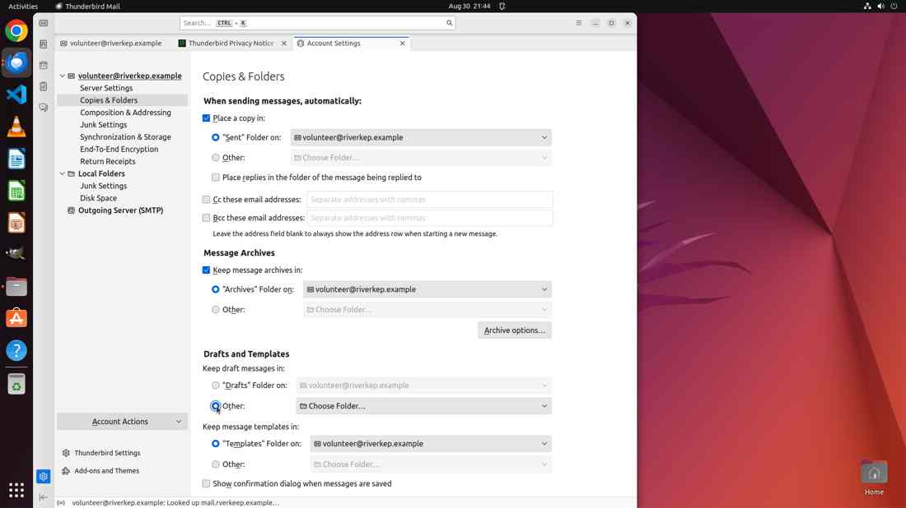
step 50 06:44:48
THINKINGThe "Other:" radio for drafts is now selected, with a "Choose Folder..." dropdown. I'll click the "Choose Folder..." dropdown to select a Local Folders draft folder.
ACTIONNow I'll click the "Choose Folder..." dropdown to pick a local folder.